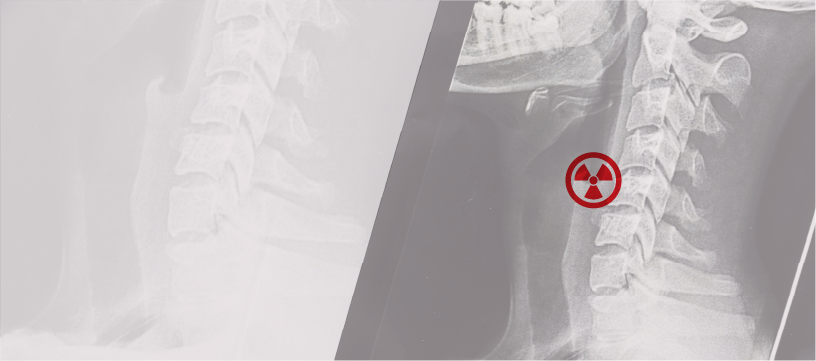
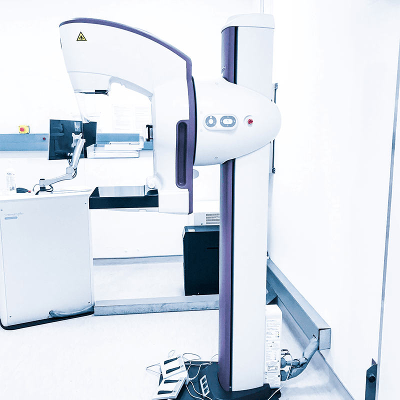

X-Ray
(General Radiology)

X-ray imaging involves exposing a part of the body to a small dose of ionising radiation to produce pictures to help doctors diagnose and treat various conditions. This is often used as a first step in understanding what’s happening inside your body.
Mammography

Mammography is a special type of X-ray that helps doctors check for signs of breast cancer. It creates detailed images of breast tissue, allowing early detection of any changes that might not be felt during a physical exam. The procedure may cause a slight discomfort , but it’s an important tool for keeping your breast health in check. Regular annual mammograms remains the best tool currently available in the early detection of breast cancer.
Ultrasonography
Ultrasonography, or ultrasound imaging, uses sound waves to create pictures of the inside of the body. Ultrasonography is widely used for various medical purposes including pregnancy monitoring, diagnosing organ conditions, and guiding certain procedures.
Computed Tomography
(CT Scan)

Computed tomography, commonly known as CT imaging or CAT scan, is a medical imaging technique that combines multiple X-ray images taken from different angles to create detailed cross-sectional pictures of the body. It allows doctors to examine internal structures such as bones, organs, and tissues with greater clarity than a standard X-ray. By using advanced computer processing, a CT scan provides precise images that help diagnose conditions like fractures, tumors, infections, and internal injuries. This non-invasive procedure is often used in emergencies, surgical planning, and monitoring diseases, making it an invaluable tool in modern medicine.
Basic Intervention
Procedures
This uses imaging techniques such as CT and ultrasound, to guide minimally invasive procedures. These techniques help diagnose and treat various conditions without the need for major surgery. Procedures may include fine needle aspiration cytology (FNAC), tru-cut core needle biopsy and aspiration/drainage. Ultrasound /CT image-guided biopsies are used to precisely guide a needle to the area of concern, such as a tumor or abnormal tissue. This technique improves accuracy, ensuring that the sample taken is from the correct location.